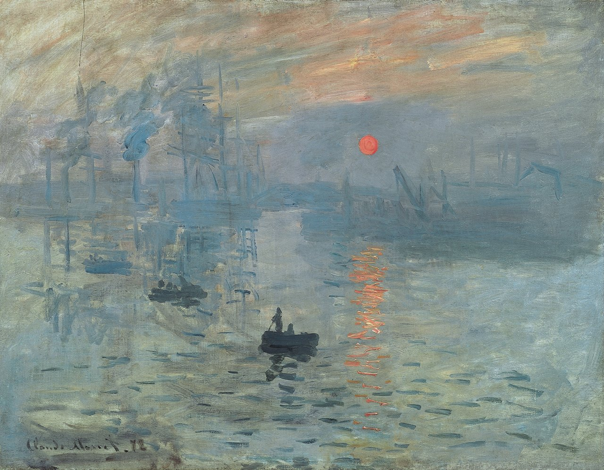

Optima Academy OnlineAn Education Experience Company
Optima Academy OnlineAn Education Experience CompanyUne visite au musée
Read each paragraph, then press ▶ Écouter and follow along with your eyes. Read it a second time with the audio playing — that pairing of eye and ear is where fluency starts.
- quand j’étais petite — when I was little
- adorait — loved / adored
- que j’admirais — that I admired
- les couleurs — the colors
- je suis retournée — I went back
- j’ai revu — I saw again
- j’ai pensé à — I thought about
- un moment — a moment
- très spécial — very special
Quand j’étais petite, j’allais souvent au musée avec ma grand-mère. Elle adorait la peinture.
Il y avait un grand tableau que j’admirais toujours. Les couleurs étaient magnifiques et la salle était calme.
Hier, je suis retournée à ce musée. J’ai revu le tableau, et j’ai pensé à ma grand-mère. C’était un moment très spécial.
The passage is below. In two steps, circle every imparfait verb, then underline every passé composé verb. Tap the words: the page marks them for you. Then think about the key question: why are paragraphs 1–2 almost all imparfait, but paragraph 3 switches to the passé composé? (Hint: memory & habit vs. one thing that happened yesterday.) The answer appears when you finish.
Impressionism was born in France. In 1874, Claude Monet showed a hazy harbor at dawn called Impression, soleil levant (“Impression, Sunrise,” 1872). A critic used the word “impression” as an insult — and the name stuck. Renoir and Degas followed, painting light, movement, and everyday life instead of grand historical scenes.

Today the great Impressionist collection hangs in the Musée d’Orsay — a former Paris train station turned museum — while the Louvre, the most-visited museum on earth, holds la Joconde (the Mona Lisa).
France invented another art form too: in 1895, the Lumière brothers screened the first films — which is why this module’s vocabulary includes le film, l’acteur, and l’actrice.
Look at the painting. Three quick questions, answered in the paragraphs above. Instant feedback — practice, not a grade.
When Monet and his friends first showed their work, the art establishment mocked them. Their brushwork looked unfinished; their subjects were too ordinary. It took courage to keep painting the way they saw the world instead of the way they were told to.
The paintings that people once laughed at now hang in the world’s greatest museums. Real originality almost always looks strange at first — courage is staying with your own vision long enough for the world to catch up.
⭐ Extra practice for this part is in Pour aller plus loin, at the end of the lesson.
Write five sentences about a real memory
Describe a place you used to go — a museum, a park, a grandparent’s house — and one thing that happened there (un jour (one day), j’ai…). Use at least three imparfait verbs (description / habit) and at least two passé composé verbs (events). This is your rehearsal for both the Speaking Task and Langue en action — write it well and reuse it. Write one sentence in each box; the coach ticks each rule as you write and counts your different verbs in each tense.
That is the end of today’s lesson. If you have time, these extras give you more practice. Each one goes with a part of the lesson above.
You read a real memory in French and understood why each tense was chosen — that’s the whole module in one passage. Tomorrow is an assessment day — à demain ! (See you tomorrow!)